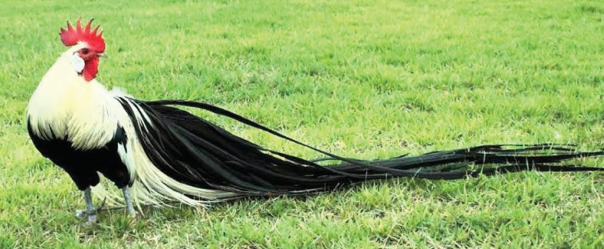
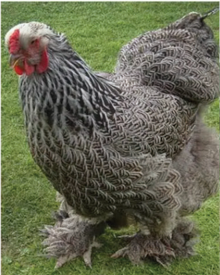
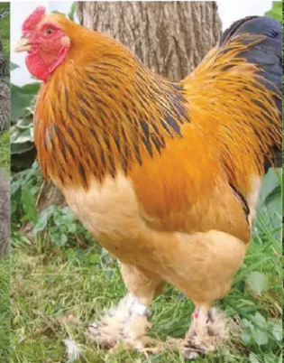
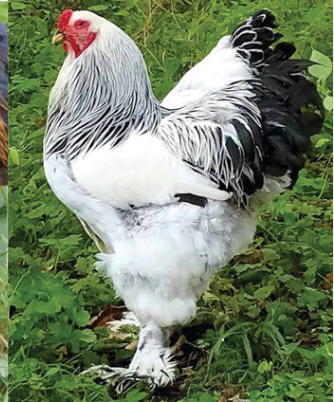

However, in the commercial production of meat, these chickens are sold before they reach the stage of laying eggs. The meat-type chickens are called broilers.
Dual-purpose chickens:
This group of chicken is developed to produce both eggs and meat. This type of chicken is popular in the tropics. They are of medium weight and they sometimes go broody.Ornamental chickens:
This group involves chickens kept for their unique beauty in their appearance and they are not mainly used for egg or meat production. They can be reared and then sold to earn money or kept in recreational gardens for show where money can be charged for the services provided. However, ornamental chickens are not widespread in Tanzania. Examples of ornamental chickens are Phoenix, Brahma, Polish, Orloff, Ayam, Silkie, and Dwarf and Long Crower chickens. Figures 10.1 (a) and (b) show some ornamental chickens.



Source: https://www.backyardchickens.com/articles/5-beautiful-ornamental-chicken-breeds.77256/